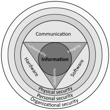

CYBER CRIME
A cybercrime is a crime that involves a computer or a computer network. The computer may have been used in committing the crime, or it may be the target. Cybercrime may harm someone's security or finances.
There are many privacy concerns surrounding cybercrime when confidential information is intercepted or disclosed, lawfully or otherwise. Internationally, both governmental and non-state actors engage in cybercrimes, including espionage, financial theft, and other cross-border crimes. Cybercrimes crossing international borders and involving the actions of at least one nation-state are sometimes referred to as cyberwarfare. Warren Buffett describes cybercrime as the "number one problem with mankind" and said that cybercrime "poses real risks to humanity."
A 2014 report sponsored by McAfee estimated that cybercrime resulted in $445 billion in annual damage to the global economy. Approximately $1.5 billion was lost in 2012 to online credit and debit card fraud in the US.[9] In 2018, a study by the Center for Strategic and International Studies (CSIS), in partnership with McAfee, concluded that nearly 1% of global GDP, close to $600 billion, is lost to cybercrime each year.[10] The World Economic Forum 2020 Global Risk Report confirmed that organized cybercrimes bodies are joining forces to perpetrate criminal activities online, while estimating the likelihood of their detection and prosecution to be less than 1% in the U.S.

Computer fraud
Computer fraud is the act of using a computer to take or alter electronic data, or to gain unlawful use of a computer or system.[14] If computer fraud involves the use of the Internet, it can be considered Internet fraud. The legal definition of computer fraud varies by jurisdiction, but typically involves accessing a computer without permission or authorisation.
Forms of computer fraud include hacking into computers to alter information, distributing malicious code such as computer worms or viruses, installing malware or spyware to steal data, phishing, and advance-fee scams.[15]
Other forms of fraud may be facilitated using computer systems, including bank fraud, carding, identity theft, extortion, and theft of classified information. These types of crimes often result in the loss of private or monetary information.
Cyberterrorism
Main article: Cyberterrorism
Cyberterrorism, in general, can be defined as an act of terrorism committed through the use of cyberspace or computer resources.[16] Acts of deliberate, large-scale disruption of computer networks, especially of personal computers attached to the Internet, by means such as computer viruses, computer worms, phishing, malicious software, hardware methods, or programming scripts can all be forms of cyberterrorism.[17]
Government officials and information technology security specialists have documented a significant increase in Internet problems and server scams since early 2001. Within the United States, there is a growing concern among government agencies such as the Federal Bureau of Investigation (FBI) and the Central Intelligence Agency (CIA) that such intrusions are part of an organized effort by cyberterrorist foreign intelligence services or other groups to map potential security holes in critical systems.[18]
Cyberextortion
Cyberextortion is a type of extortion that occurs when a website, e-mail server, or computer system is subjected to or threatened with attacks by malicious hackers, such as denial-of-service attacks. Cyberextortionists demand money in return for promising to stop the attacks and to offer "protection". According to the Federal Bureau of Investigation, cybercrime extortionists are increasingly attacking corporate websites and networks, crippling their ability to operate, and demanding payments to restore their service. More than 20 cases are reported each month to the FBI and many go unreported in order to keep the victim's name out of the public domain. Perpetrators typically use a distributed denial-of-service attack.[19] However, other cyberextortion techniques exist, such as doxing, extortion, and bug poaching.
Ransomware is a type of malware used in cyberextortion to restrict access to files, sometimes threatening permanent data erasure unless a ransom is paid. The Kaspersky Lab 2016 Security Bulletin report estimated that a business falls victim to ransomware every 40 minutes,[21] and predicted that number would decrease to 11 minutes by 2021. With ransomware remaining one of the fastest-growing cybercrimes in the world, global ransomware damage is predicted to cost up to $20 billion in 2021.[22]
Cybersex trafficking
Main article: Cybersex trafficking
Cybersex trafficking is the transportation of victims and then the live streaming of coerced sexual acts or rape on webcam.[23][24][25][26] Victims are abducted, threatened, or deceived and transferred to "cybersex dens".[27][28][29] The dens can be in any location where the cybersex traffickers have a computer, tablet, or phone with an internet connection.[25] Perpetrators use social media networks, videoconferences, dating pages, online chat rooms, apps, dark web sites,[30] and other platforms.[31] They use online payment systems[30][32][33] and cryptocurrencies to hide their identities.[34] Millions of reports of its occurrence are sent to authorities annually.[35] New legislation and police procedures are needed to combat this type of cybercrime.[36]
An example of cybersex trafficking is the 2018–2020 Nth room case in South Korea.[37]
:Cyberwarfare
Main article: Cyberwarfare
The U.S. Department of Defense notes that cyberspace has emerged as a national-level concern through several recent events of geostrategic significance, including the attack on Estonia's infrastructure in 2007, allegedly by Russian hackers. In August 2008, Russia again allegedly conducted cyberattacks, this time in a coordinated and synchronized kinetic and non-kinetic campaign against the country of Georgia. Fearing that such attacks may become the norm in future warfare among nation-states, the military commanders will adapt the concept of cyberspace operations impact in the future.[38]
:Computer as a target
These crimes are committed by a selected group of criminals. Unlike crimes using the computer as a tool, these crimes require the technical knowledge of the perpetrators. As such, as technology evolves, so too does the nature of the crime. These crimes are relatively new, having been in existence for only as long as computers have—which explains how unprepared society and the world, in general, are towards combating these crimes. There are numerous crimes of this nature committed daily on the internet. They are seldom committed by loners, instead usually involving large syndicate groups.
Crimes that primarily target computer networks include:
:Computer viruses
Denial-of-service attacks
Malware (malicious code)
Computer as a tool
Main articles: Internet fraud, Spamming, Phishing, and Carding (fraud)
When the individual is the main target of cybercrime, the computer can be considered as the tool rather than the target. These crimes generally involve less technical expertise. Human weaknesses are generally exploited. The damage dealt is largely psychological and intangible, making legal action against the variants more difficult. These are the crimes which have existed for centuries in the offline world. Scams, theft, and the like existed before the development of computers and the internet. The same criminal has simply been given a tool which increases their potential pool of victims and makes them all the harder to trace and apprehend.[39]
Crimes that use computer networks or devices to advance other ends include:
Fraud and identity theft (although this increasingly uses malware, hacking or phishing, making it an example of both "computer as target" and "computer as tool" crime)
Information warfare
Phishing scams
Spam
Propagation of illegal obscene or offensive content, including harassment and threats
The unsolicited sending of bulk email for commercial purposes (spam) is unlawful in some jurisdictions.
:Phishing is mostly propagated via email. Phishing emails may contain links to other websites that are affected by malware.[40] Or, they may contain links to fake online banking or other websites used to steal private account information.
Obscene or offensive content
The content of websites and other electronic communications may be distasteful, obscene, or offensive for a variety of reasons. In some instances, these communications may be illegal.
The extent to which these communications are unlawful varies greatly between countries, and even within nations. It is a sensitive area in which the courts can become involved in arbitrating between groups with strong beliefs.
One area of Internet pornography that has been the target of the strongest efforts at curtailment is child pornography, which is illegal in most jurisdictions in the world.
Ad-fraud
See also: Ad fraud and Click fraud
Ad-frauds are particularly popular among cybercriminals, as such frauds are less likely to be prosecuted and are particularly lucrative cybercrimes.[41] Jean-Loup Richet, Professor at the Sorbonne Business School, classified the large variety of ad-fraud observed in cybercriminal communities into three categories: (1) identity fraud; (2) attribution fraud; and (3) ad-fraud services.[13]
Identity fraud aims to impersonate real users and inflate audience numbers. Several ad-fraud techniques relate to this category and include traffic from bots (coming from a hosting company or a data center, or from compromised devices); cookie stuffing; falsifying user characteristics, such as location and browser type; fake social traffic (misleading users on social networks into visiting the advertised website); and the creation of fake social signals to make a bot look more legitimate, for instance by opening a Twitter or Facebook account.
Attribution fraud aims to impersonate real users' behaviors (clicks, activities, conversations, etc.). Multiple ad-fraud techniques belong to this category: hijacked devices and the use of infected users (through malware) as part of a botnet to participate in ad fraud campaigns; click farms (companies where low-wage employees are paid to click or engage in conversations and affiliates' offers); incentivized browsing; video placement abuse (delivered in display banner slots); hidden ads (that will never be viewed by real users); domain spoofing (ads served on a website other than the advertised real-time bidding website); and clickjacking (user is forced to click on the ad).
Ad fraud services are related to all online infrastructure and hosting services that might be needed to undertake identity or attribution fraud. Services can involve the creation of spam websites (fake networks of websites created to provide artificial backlinks); link building services; hosting services; creation of fake and scam pages impersonating a famous brand and used as part of an ad fraud campaign.
A successful ad-fraud campaign involves a sophisticated combination of these three types of ad-fraud—sending fake traffic through bots using fake social accounts and falsified cookies; bots will click on the ads available on a scam page that is faking a famous brand.